T010 ·结合位点相似性和脱靶预测¶
注意： 此讲座是 TeachOpenCADD 的一部分，该平台旨在教授特定领域的技能并提供管道模板作为研究项目的起点。
作者：
Angelika Szengel，2017 年 CADD 研讨会，柏林夏里特医学院
Marvis Sydow，2018 年 CADD 研讨会，柏林夏里特医学院
Richard Gowers，2019 年 RDKit UGM 黑客马拉松
Jaime Rodríguez-Guerra， 2020， [Volkamer 实验室]（https://volkamerlab.org）， Charité
Dominique Sydow，2018-2020，[Volkamer 实验室]（https://volkamerlab.org），夏里特医学院
Mareike Leja， 2020， [Volkamer lab]（https://volkamerlab.org）， 夏里特医学院
Talktorial T010：此演讲是 [第一篇 TeachOpenCADD 论文]（https://jcheminf.biomedcentral.com/articles/10.1186/s13321-019-0351-x） 中描述的 TeachOpenCADD 管道的一部分，由演讲 T001-T010 组成。
注意：请逐个单元格运行此笔记本。也可以在一个中运行所有单元格，但是，可能会缺少部分 ‘nglview’ 3D 表示。
本次演讲的目的¶
在本讲座中，我们使用完整蛋白质和结合位点的结构相似性来预测脱靶，即不是药物预期靶标的蛋白质。这可能会导致不必要的副作用或实现所需的药物替代应用（药物重新定位）。 我们讨论了结合位点比较的主要步骤并实施了一种基本方法，即结构之间的几何变化（两个结构之间的均方根偏差）。
理论中的内容¶
脱靶蛋白
计算脱靶预测：结合位点比较
成对 RMSD 作为相似性的简单度量
伊马替尼，一种酪氨酸激酶抑制剂
内容 实用¶
加载和可视化感兴趣的配体 （Imatinib/STI）
从 PDB 获取所有蛋白质-STI 复合物
可视化 PDB 结构
对齐 PDB 结构（全蛋白）
获取成对 RMSD（全蛋白）
对齐 PDB 结构（结合位点）
获取成对 RMSD（结合位点）
过滤掉异常值
参考资料¶
结合位点叠加 + 比对
绑定站点比较评论：
[当前。计算。辅助药物 Des。 （2008），4,209-20]（https://www.eurekaselect.com/67606/article/how-measure-similarity-between-protein-ligand-binding-sites）
[J. Med. Chem. （2016），9,4121-51]（https://pubs.acs.org/doi/10.1021/acs.jmedchem.6b00078）
使用 Python 进行分子叠加：’opencadd’ 包（’structure.superposition’ 模块）（[GitHub 存储库]（https://github.com/volkamerlab/opencadd））
维基百科关于均方根差 （[RMSD]（https://en.wikipedia.org/wiki/Root-mean-square_deviation_of_atomic_positions）） 和 [结构叠加]（https://en.wikipedia.org/wiki/Structural_alignment） 的文章
结构叠加：[书籍章节：蛋白质结构对齐的算法、应用和挑战，蛋白质化学和结构生物学进展（2014），94，121-75]（https://www.sciencedirect.com/science/article/pii/B9780128001684000056?via%3Dihub）
伊马替尼
伊马替尼评论：[Nat. Rev. Clin.Oncol.（2016），13,431-46]（https://www.nature.com/articles/nrclinonc.2016.41）
伊马替尼的混杂： [J. 生物学。（2009），8,30]（https://jbiol.biomedcentral.com/articles/10.1186/jbiol134）
[伊马替尼的 ChEMBL 信息]（https://www.ebi.ac.uk/chembl/compound/inspect/CHEMBL941）
[伊马替尼的 PDB 信息]（https://www3.rcsb.org/ligand/STI）
伊马替尼的副作用
[MedFacts 消费药物信息]（https://www.drugs.com/cdi/imatinib.html）
[BMC 结构 生物学（2009），9]（https://bmcstructbiol.biomedcentral.com/articles/10.1186/1472-6807-9-7）
PDB 查询
‘pypdb’ Python 包 [生物信息学 （2016），1，159-60]（https://academic.oup.com/bioinformatics/article-lookup/doi/10.1093/bioinformatics/btv543）;[文档]（http://www.wgilpin.com/pypdb_docs/html/）
‘biotite’ Python 包 [BMC Bioinformatics （2018）， 19]（https://bmcbioinformatics.biomedcentral.com/articles/10.1186/s12859-018-2367-z）;[文档]（https://www.biotite-python.org/）
查看 Talktorial T008 以获取有关 PDB 查询的更多详细信息
Theory¶
脱靶蛋白¶
脱靶可以是与药物或其代谢物（其中之一）相互作用而不成为指定靶蛋白的任何蛋白质。 脱靶引起的分子反应会导致不必要的副作用，从相当无害的影响到极其有害的影响。 脱靶主要是因为在靶和脱靶的结合位点上彼此具有相似的结构基序，因此可以结合相似的配体。
计算脱靶预测：结合位点比较¶
对潜在脱靶目标的计算辅助预测旨在最大限度地降低开发用于医疗的潜在危险物质的风险。 有几种算法方法可以评估结合位点相似性，但它们始终包括三个主要步骤：
结合位点编码：结合位点使用不同的描述符技术进行编码，并存储在目标数据库中。
绑定位点对比：查询绑定位点与目标数据库进行比较，使用不同的相似度度量。
目标排名：根据合适的评分方法对目标进行排名。 有关不同相似性测量和现有工具的详细信息，我们参考了两篇关于结合位点比较的优秀评论（[Curr.计算。辅助药物 Des。 （2008）， 4， 209-20]（https://www.eurekaselect.com/67606/article/how-measure-similarity-between-protein-ligand-binding-sites） 和 [J. Med. Chem. （2016），9,4121-51]（https://pubs.acs.org/doi/10.1021/acs.jmedchem.6b00078））。
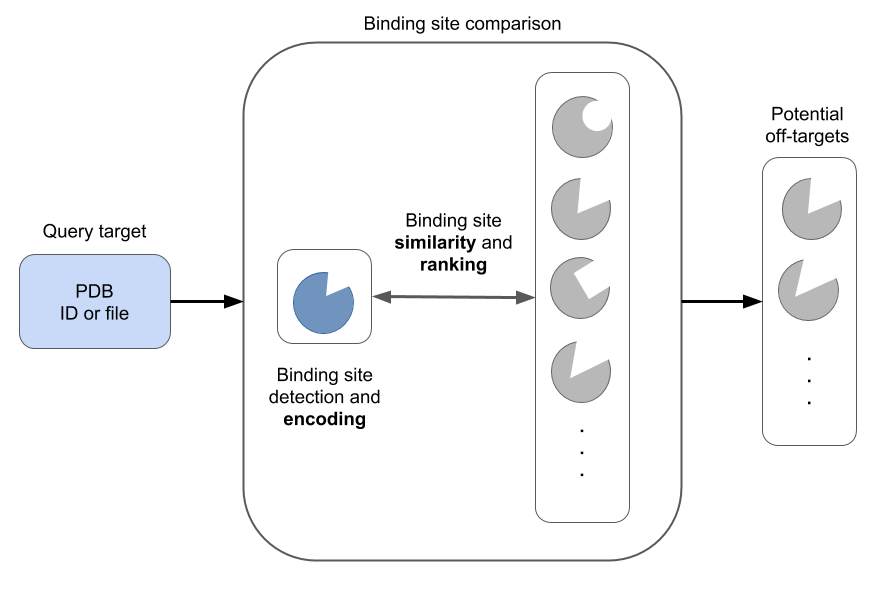
Figure 1: Main steps of binding site comparison methods (figure by Dominique Sydow).
成对 RMSD 作为相似度的简单度量¶
对相似度进行评分的一种简单明了的方法是使用计算出的均方根差 （RMSD），它是两个对齐结构的原子之间距离的平方的平方的平方根（[维基百科]（https://en.wikipedia.org/wiki/Root-mean-square_deviation_of_atomic_positions））。
为了找到在两个结构之间进行比较的相应原子，首先需要根据基于序列或序列无关的比对算法对它们进行比对（[书籍章节：蛋白质结构比对的算法、应用和挑战，在 蛋白质化学和结构生物学进展（2014），94，121-75]（https://www.sciencedirect.com/science/article/pii/B9780128001684000056?via%3Dihub））。
伊马替尼，一种酪氨酸激酶抑制剂¶
激酶将磷酸基团从 ATP 转移到蛋白质，从而调节各种细胞过程，例如信号转导、代谢和蛋白质调节。 如果这些激酶具有组成型活性（由于基因组突变），它们会扭曲调节过程并导致癌症。 癌症治疗的一个例子是伊马替尼 （[Nat. Rev. Clin.Oncol.（2016）， 13， 431-46]（https://www.nature.com/articles/nrclinonc.2016.41）），一种用于治疗癌症的小分子酪氨酸激酶抑制剂，更具体地说是慢性粒细胞白血病 （CML） 和胃肠道间质瘤 （GIST）。 伊马替尼被证明不完全具有特异性，并且靶向其主要靶标以外的酪氨酸激酶。这用于药物重新定位，即伊马替尼被批准用于其他癌症类型，（[J. Biol.（2009）， 8， 30]（https://jbiol.biomedcentral.com/articles/10.1186/jbiol134）），但也可能显示不需要的副作用，例如过敏反应、感染、出血或头痛的迹象（[MedFacts Consumer Drug Information]（https://www.drugs.com/cdi/imatinib.html））。
实战¶
在下文中，我们将获取和过滤结合伊马替尼的 PDB 结构。我们将研究伊马替尼结合蛋白（具有已解决蛋白质结构的蛋白）的结构相似性。 使用的相似性度量是成对 RMSD 计算（作为简单的相似性度量），以表明这种简单的方法可以用作潜在脱靶的初始测试。
[1]:
import logging
from pathlib import Path
import random
import warnings
import pandas as pd
import matplotlib.pyplot as plt
import seaborn as sns
import redo
import nglview as nv
import pypdb
import biotite.database.rcsb as rcsb
from rdkit import Chem
from rdkit.Chem import Draw, AllChem
from MDAnalysis.analysis import rms
from opencadd.structure.core import Structure
from opencadd.structure.superposition.api import align, METHODS
from opencadd.structure.superposition.engines.mda import MDAnalysisAligner
from teachopencadd.utils import seed_everything
seed_everything()
~/.miniconda3/envs/teachopencadd/lib/python3.9/site-packages/h5py/__init__.py:46: DeprecationWarning: `np.typeDict` is a deprecated alias for `np.sctypeDict`.
from ._conv import register_converters as _register_converters
[2]:
# Ignore warnings, added because of the two following warnings
# VisibleDeprecationWarning (MDAnalysis), ClusterWarning (seaborn)
# TODO check in the future if ignoring warnings is still necessary
warnings.simplefilter("ignore")
# Also make MDAnalysis code in OpenCADD a bit less noisy
logger = logging.getLogger("opencadd")
logger.setLevel(logging.ERROR)
[3]:
# Set path to this notebook
HERE = Path(_dh[0])
DATA = HERE / "data"
[4]:
# Frozen set of PDB IDs that will be used in this notebook
# TODO check in the future if we want to update this dataset
FROZEN_PDB_IDS = ["3HEC", "2PL0", "4CSV", "4R7I", "1XBB", "3FW1", "1T46"]
加载并可视化感兴趣的配体 （Imatinib/STI）¶
伊马替尼的 SMILES 格式可以从 [ChEMBL 数据库（通过其化合物 ID CHEMBL941]）（https://www.ebi.ac.uk/chembl/compound/inspect/CHEMBL941） 或 [PDB 数据库（其配体博览会 ID STI]）（https://www3.rcsb.org/ligand/STI） 中检索。 我们只需从化学组分汇总表的“Isomeric SMILES”条目中复制字符串，然后在此处手动加载配体。
[5]:
smiles = Chem.MolFromSmiles("CN1CCN(Cc2ccc(cc2)C(=O)Nc2ccc(C)c(Nc3nccc(n3)-c3cccnc3)c2)CC1")
Draw.MolToImage(smiles)
[5]:
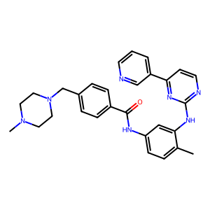
为了检查 STI 的 3D 结构，我们使用开源工具“nglview”。 在我们可以在 ‘nglview’ 中查看 STI 之前，我们需要计算它的 3D 坐标。
首先，我们将氢原子添加到分子中，这些氢原子并不总是以 SMILES 格式明确表示。 其次，我们使用距离几何来获得分子的初始坐标，并使用力场 UFF（通用力场）优化分子的结构。
[6]:
molecule = Chem.AddHs(smiles)
molecule
[6]:
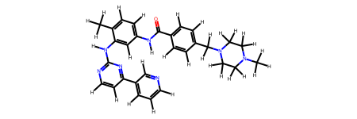
[7]:
AllChem.EmbedMolecule(molecule)
AllChem.UFFOptimizeMolecule(molecule)
molecule
[7]:

现在，我们已准备好加入 ‘nglview’！
[8]:
view = nv.show_rdkit(molecule)
view
[9]:
view.render_image(trim=True, factor=2, transparent=True);
[10]:
view._display_image()
[10]:
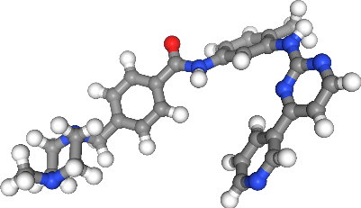
从 PDB 获取蛋白质-STI 复合物¶
在下文中，我们将搜索描述 PDB 中满足以下条件的结构的 PDB ID：
结构与伊马替尼结合（配体 Expo ID：STI）
通过 X 射线晶体学实验解析结构
结构的分辨率小于或等于 \(3.0\)
结构只有一个链（为简单起见）
PDB 数据库中的每个结构都链接到许多不同的字段，以保存元信息，例如我们定义的标准。在 RCSB 网站上查看 [chemicals]（https://search.rcsb.org/chemical-search-attributes.html）/[structures]（https://search.rcsb.org/structure-search-attributes.html） 的可用字段和支持的运算符的完整列表。 包 ‘biotite’ 提供了一个非常好的模块 ‘databases.rcsb’ （见 [docs]（https://www.biotite-python.org/apidoc/biotite.database.rcsb.html）），它允许我们查询一个 （’FieldQuery’， 见 [docs]（https://www.biotite-python.org/apidoc/biotite.database.rcsb.FieldQuery.html#biotite.database.rcsb.FieldQuery）） 或更多 （’CompositeQuery’， 见 [docs]（https://www.biotite-python.org/apidoc/biotite.database.rcsb.CompositeQuery.html#biotite.database.rcsb.CompositeQuery））这些字段检索符合我们条件的 PDB ID 的计数 （’count’） 或列表 （’search’）。
下表总结了我们的查询：
领域 |
操作员 |
价值 |
|---|---|---|
‘rcsb_nonpolymer_entity_container_identifiers.nonpolymer_comp_id’ |
‘exact_match’ |
性传播感染 |
‘exptl.method’ |
‘exact_match’ |
X 射线衍射 |
‘rcsb_entry_info.resolution_combined’ |
‘less_or_equal’ |
3.0 美元 |
‘rcsb_entry_info.deposited_polymer_entity_instance_count’ |
‘等于’ |
1 美元 |
我们将首先单独执行每个查询，并检查每个条件的匹配项数。之后，我们将所有查询与 ‘and’ 运算符组合在一起，以仅匹配满足所有条件的 PDB ID。
查询 STI 绑定结构
[11]:
query_by_ligand_id = rcsb.FieldQuery(
"rcsb_nonpolymer_entity_container_identifiers.nonpolymer_comp_id", exact_match="STI"
)
print(f"Number of matches: {rcsb.count(query_by_ligand_id)}")
Number of matches: 28
从 X 射线晶体学中查询结构
[12]:
query_by_experimental_method = rcsb.FieldQuery("exptl.method", exact_match="X-RAY DIFFRACTION")
print(f"Number of matches: {rcsb.count(query_by_experimental_method)}")
Number of matches: 175602
分辨率小于或等于 3.0 的查询结构
[13]:
query_by_resolution = rcsb.FieldQuery("rcsb_entry_info.resolution_combined", less_or_equal=3.0)
print(f"Number of matches: {rcsb.count(query_by_resolution)}")
Number of matches: 168059
只有一个链的查询结构
[14]:
query_by_polymer_count = rcsb.FieldQuery(
"rcsb_entry_info.deposited_polymer_entity_instance_count", equals=1
)
print(f"Number of matches: {rcsb.count(query_by_polymer_count)}")
Number of matches: 74646
满足上述所有条件的查询结构
使用 and运算符组合上面的查询列表。
[15]:
query = rcsb.CompositeQuery(
[
query_by_ligand_id,
query_by_experimental_method,
query_by_resolution,
query_by_polymer_count,
],
"and",
)
pdb_ids = rcsb.search(query)
print(f"Number of matches: {len(pdb_ids)}")
print("Selected PDB IDs:")
print(*pdb_ids)
Number of matches: 9
Selected PDB IDs:
1T46 1XBB 2PL0 3FW1 3GVU 3HEC 4CSV 4R7I 6JOL
Note：下一步仅具有技术原因。为了自动维护笔记本，我们在此处定义一组要使用的特定 PDB ID。因此，即使将符合我们筛选条件的新 PDB 结构添加到 PDB 中，它们也不会包含在下游分析中，因此输出将保持不变。如果要使用完整的 PDB 结构集，请远程执行此步骤。
[16]:
pdb_ids = FROZEN_PDB_IDS
print("Final set of PDB IDs:")
print(*pdb_ids)
Final set of PDB IDs:
3HEC 2PL0 4CSV 4R7I 1XBB 3FW1 1T46
可视化 PDB 结构¶
首先，我们在 nglview 中加载所有结构，以便目视检查蛋白质数据集的 3D 结构。
[17]:
view = nv.NGLWidget()
for pdb_id in pdb_ids:
view.add_pdbid(pdb_id)
view
[18]:
view.render_image(trim=True, factor=2, transparent=True);
[19]:
view._display_image()
[19]:
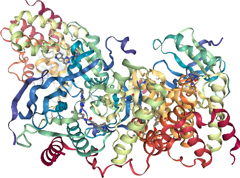
虽然这张图片色彩鲜艳，卷曲，但还不能提供信息。在下一步中，我们将结构彼此对齐。
对齐 PDB 结构（全蛋白）¶
我们将使用我们的 opencadd 包之一（structure.superposition 模块）来指导不同蛋白质的结构对齐。我们将使用的方法基于由序列比对提供的匹配残基引导的叠加。包中还有其他方法，但这个简单的方法足以展示一些相似之处。
注意：这种方法使分析偏向于具有相似序列的结构。对于自动化工作流程（我们不知道蛋白质对的序列或结构相似性），解决方案可能是根据所有三种测量计算 RMSD，并保留最佳值以供进一步分析。
首先，我们显示所有结构体与列表中第一个结构体的对齐情况。
[20]:
# Download PDB
structures = [Structure.from_pdbid(pdb_id) for pdb_id in pdb_ids]
# Strip solvent and other artifacts of crystallography
proteins = [Structure.from_atomgroup(s.select_atoms("protein")) for s in structures]
# Align proteins
results = align(proteins, method=METHODS["mda"])
[21]:
view = nv.NGLWidget()
for protein in proteins:
view.add_component(protein.atoms)
view
[22]:
view.render_image(trim=True, factor=2, transparent=True);
[23]:
view._display_image()
[23]:
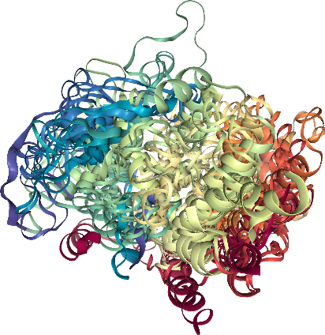
许多螺旋的结构排列很高，而其他蛋白质部分的结构排列较低或较差。
[24]:
def calc_rmsd(A, B):
"""
Calculate RMSD between two structures.
Parameters
----------
A : opencadd.structure.core.Structure
Structure A.
B : opencadd.structure.core.Structure
Structure B.
Returns
-------
float
RMSD value.
"""
aligner = MDAnalysisAligner()
selection, _ = aligner.matching_selection(A, B)
A = A.select_atoms(selection["reference"])
B = B.select_atoms(selection["mobile"])
return rms.rmsd(A.positions, B.positions, superposition=False)
[25]:
def calc_rmsd_matrix(structures, names):
"""
Calculate RMSD matrix between a list of structures.
Parameters
----------
structures : list of opencadd.structure.core.Structure
List of structures.
names : list of str
List of structure names.
Returns
-------
pandas.DataFrame
RMSD matrix.
"""
values = {name: {} for name in names}
for i, (A, name_i) in enumerate(zip(structures, names)):
for j, (B, name_j) in enumerate(zip(structures, names)):
if i == j:
values[name_i][name_j] = 0.0
continue
if i < j:
rmsd = calc_rmsd(A, B)
values[name_i][name_j] = rmsd
values[name_j][name_i] = rmsd
continue
df = pd.DataFrame.from_dict(values)
return df
获取成对 RMSD（全蛋白）¶
[26]:
# NBVAL_CHECK_OUTPUT
rmsd_matrix = calc_rmsd_matrix(proteins, pdb_ids)
rmsd_matrix.round(1)
[26]:
| 3HEC | 2PL0 | 4CSV | 4R7I | 1XBB | 3FW1 | 1T46 | |
|---|---|---|---|---|---|---|---|
| 3HEC | 0.0 | 16.1 | 12.6 | 20.5 | 17.2 | 23.7 | 21.7 |
| 2PL0 | 16.1 | 0.0 | 3.7 | 13.5 | 7.5 | 22.8 | 14.1 |
| 4CSV | 12.6 | 3.7 | 0.0 | 14.0 | 7.8 | 22.5 | 14.6 |
| 4R7I | 20.5 | 13.5 | 14.0 | 0.0 | 11.9 | 21.9 | 3.2 |
| 1XBB | 17.2 | 7.5 | 7.8 | 11.9 | 0.0 | 22.2 | 12.6 |
| 3FW1 | 23.7 | 22.8 | 22.5 | 21.9 | 22.2 | 0.0 | 21.6 |
| 1T46 | 21.7 | 14.1 | 14.6 | 3.2 | 12.6 | 21.6 | 0.0 |
我们将此 RMSD 优化的结果可视化为热图。
[27]:
# Make sure matplotlib version >= 3.1.2; otherwise you'll get Y-cropped heatmaps
sns.heatmap(
rmsd_matrix,
linewidths=0,
annot=True,
square=True,
cbar_kws={"label": "RMSD ($\AA$)"},
cmap="Blues",
);
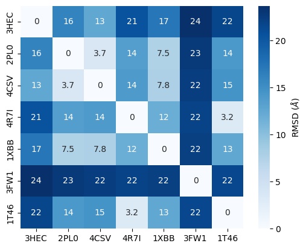
我们对热图进行聚类，以便根据 RMSD 细化查看蛋白质相似性。
[28]:
def plot_clustermap(rmsd):
"""
Plot clustered heatmap from import RMSD matrix.
Parameters
----------
rmsd : pandas.DataFrame
RMSD matrix.
title : str
Plot title.
Returns
-------
matplotlib.figure.Figure
Clustered heatmap.
"""
g = sns.clustermap(
rmsd,
linewidths=1,
annot=True,
cbar_kws={"label": "RMSD ($\AA$)"},
cmap="Blues",
)
plt.setp(g.ax_heatmap.get_xticklabels(), rotation=0)
plt.setp(g.ax_heatmap.get_yticklabels(), rotation=0)
sns.set(font_scale=1.5)
return plt.gcf()
[29]:
plot_clustermap(rmsd_matrix);
RMSD 比较显示，一种蛋白质与其他蛋白质（即 3FW1）差异最大。让我们尝试通过检查数据集中有哪些蛋白质来理解。
蛋白质根据它们催化的化学反应进行分类，带有 EC（酶委员会）编号。我们将在这里使用它们来检查蛋白质所属的酶基团。让我们使用软件包 pypdb 从 PDB 获取 EC 编号（有关详细信息，请参见 Talktorial T008）。
[30]:
# NBVAL_CHECK_OUTPUT
# Get EC numbers for PDB IDs from PDB
pdbs_info = [pypdb.get_all_info(pdb_id) for pdb_id in pdb_ids]
pdbx_descriptors = [pdb_info["struct"]["pdbx_descriptor"] for pdb_info in pdbs_info]
ec_numbers = pd.DataFrame(
{
"pdb_id": pdb_ids,
"description": pdbx_descriptors,
}
)
# Increase column width to fit all text
pd.set_option("max_colwidth", 100)
ec_numbers
[30]:
| pdb_id | description | |
|---|---|---|
| 0 | 3HEC | Mitogen-activated protein kinase 14 (E.C.2.7.11.24) |
| 1 | 2PL0 | Proto-oncogene tyrosine-protein kinase LCK (E.C.2.7.10.2) |
| 2 | 4CSV | SRC-ABL TYROSINE KINASE ANCESTOR (E.C.2.7.10.2) |
| 3 | 4R7I | Macrophage colony-stimulating factor 1 receptor (E.C.2.7.10.1) |
| 4 | 1XBB | Tyrosine-protein kinase SYK (E.C.2.7.1.112) |
| 5 | 3FW1 | Human Quinone Reductase 2 Bound to Imatinib |
| 6 | 1T46 | Homo sapiens v-kit Hardy-Zuckerman 4 feline sarcoma viral oncogene homolog (E.C.2.7.1.112) |
我们可以看到 3FW1 是一种人醌还原酶 2 （NQO2），是唯一不属于 2.7 类（磷转移酶）的蛋白质，它包含酪氨酸激酶 （EC 2.7.10.2），这是伊马替尼的指定靶标。据报道，3FW1 是一种脱靶“对患者慢性粒细胞白血病的药物设计和治疗具有潜在影响”（[BMC Struct. Biol.（2009），9]（https://bmcstructbiol.biomedcentral.com/articles/10.1186/1472-6807-9-7））。
Align PDB structures (binding sites)¶
到目前为止，我们已经使用完整的蛋白质结构进行比对和 RMSD 细化。然而，配体仅在蛋白质的结合位点结合。 因此，结合位点的相似性是脱靶预测的更推定的基础，而不是完整蛋白质结构的相似性。
我们通过选择任何配体原子 10 Å 范围内的所有残基来定义蛋白质的结合位点。这些结合位点残基用于比对，只有它们的 Cɑ 原子（蛋白质骨架）用于 RMSD 细化。在这里，我们显示了所有结构体与列表中第一个结构体的对齐情况。
请注意，要使对准器工作，必须选择完整的残基作为距离搜索的一部分，因此需要与 （…） 相同的残基’ 查询。
[31]:
sel = "same residue as (resname STI or (around 10 resname STI))"
binding_sites = [Structure.from_atomgroup(s.select_atoms(sel)) for s in structures]
我们只看一下蛋白质的结合位点。
[32]:
view = nv.NGLWidget()
for binding_site in binding_sites:
view.add_component(binding_site.atoms)
view
[33]:
view.render_image(trim=True, factor=2, transparent=True);
[35]:
view._display_image()
[35]:
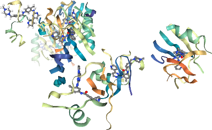
现在我们对齐结合位点。
[36]:
results_binding_sites = align(binding_sites, method=METHODS["mda"])
让我们可视化我们对齐的结合位点。
[37]:
view = nv.NGLWidget()
for binding_site in binding_sites:
view.add_component(binding_site.atoms)
view
[38]:
view.render_image(trim=True, factor=2, transparent=True);
[39]:
view._display_image()
[39]:

获取成对 RMSD（结合位点）¶
[40]:
# NBVAL_CHECK_OUTPUT
rmsd_matrix_binding_sites = calc_rmsd_matrix(binding_sites, pdb_ids)
rmsd_matrix_binding_sites.round(1)
[40]:
| 3HEC | 2PL0 | 4CSV | 4R7I | 1XBB | 3FW1 | 1T46 | |
|---|---|---|---|---|---|---|---|
| 3HEC | 0.0 | 6.2 | 4.6 | 5.7 | 12.3 | 15.0 | 9.8 |
| 2PL0 | 6.2 | 0.0 | 4.0 | 4.0 | 11.7 | 11.3 | 4.3 |
| 4CSV | 4.6 | 4.0 | 0.0 | 5.2 | 10.7 | 13.9 | 5.9 |
| 4R7I | 5.7 | 4.0 | 5.2 | 0.0 | 10.5 | 14.5 | 2.7 |
| 1XBB | 12.3 | 11.7 | 10.7 | 10.5 | 0.0 | 13.5 | 11.1 |
| 3FW1 | 15.0 | 11.3 | 13.9 | 14.5 | 13.5 | 0.0 | 15.3 |
| 1T46 | 9.8 | 4.3 | 5.9 | 2.7 | 11.1 | 15.3 | 0.0 |
我们显示了 RMSD 结果的群集热图。
[41]:
# Show the pairwise RMSD values as clustered heatmap
plot_clustermap(rmsd_matrix_binding_sites);
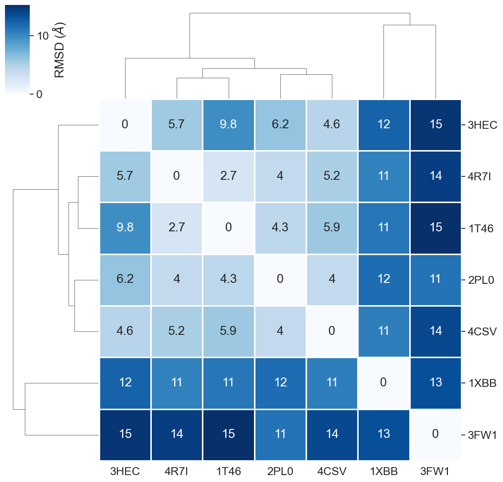
此热图中的主要观察结果是什么？
正如在 全蛋白 比较中已经观察到的那样，结合位点 比较也揭示了 ‘3FW1’ 的最高相似性。由于“3FW1”是数据集中唯一不代表激酶的结构，因此我们对相似性测量能够发现这一点感到满意。如前所述，据报道，人醌还原酶 2 （’3FW1’） 是伊马替尼的脱靶目标。
此外，激酶“1XBB”与其他激酶相比显示出更高的差异性。这可以通过“1XBB”以与其他激酶 （DFG-out） 不同的构象 （DFG-in） 进行解析来解释。DFG 基序是激酶中的重要结构元件，用于定义激酶是活性的（DFG-in 构象）还是无活性的（DFG-out 构象）。注意：激酶结构的 DFG 构象可以在 [KLIFS 数据库]（https://www.klifs.net） 中查找。
其余结构彼此相对相似，这是我们预期的，因为它们都代表整体构象相同的激酶。
请注意，此处计算的 RMSD 值取决于残基选择（结合位点定义）和先验序列比对的质量。
过滤掉异常值¶
为了更清晰地描述最相似的结构，我们可以过滤掉 ‘3FW1’ 和 ‘1XBB’ 并重新运行结合位点比较。
[42]:
filtered_structures = []
filtered_pdb_ids = []
for name, structure in zip(pdb_ids, structures):
if name not in ("3FW1", "1XBB"):
filtered_structures.append(structure)
filtered_pdb_ids.append(name)
[43]:
selection = "same residue as (resname STI or (around 10 resname STI))"
filtered_binding_sites = [
Structure.from_atomgroup(s.select_atoms(selection)) for s in filtered_structures
]
[44]:
view = nv.NGLWidget()
for binding_site in filtered_binding_sites:
view.add_component(binding_site.atoms)
view
[45]:
view.render_image(trim=True, factor=2, transparent=True);
[46]:
view._display_image()
[46]:
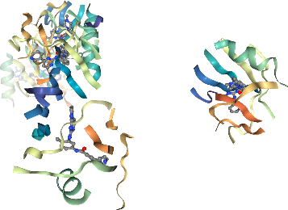
[47]:
filtered_results_binding_sites = align(filtered_binding_sites, method=METHODS["mda"])
[48]:
view = nv.NGLWidget()
for binding_site in filtered_binding_sites:
view.add_component(binding_site.atoms)
view
[49]:
view.render_image(trim=True, factor=2, transparent=True);
[50]:
view._display_image()
[50]:
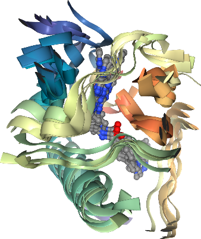
[51]:
# NBVAL_CHECK_OUTPUT
filtered_rmsd_matrix_bs = calc_rmsd_matrix(filtered_binding_sites, filtered_pdb_ids)
filtered_rmsd_matrix_bs.round(1)
[51]:
| 3HEC | 2PL0 | 4CSV | 4R7I | 1T46 | |
|---|---|---|---|---|---|
| 3HEC | 0.0 | 6.2 | 4.6 | 5.7 | 9.8 |
| 2PL0 | 6.2 | 0.0 | 4.0 | 4.0 | 4.3 |
| 4CSV | 4.6 | 4.0 | 0.0 | 5.2 | 5.9 |
| 4R7I | 5.7 | 4.0 | 5.2 | 0.0 | 2.7 |
| 1T46 | 9.8 | 4.3 | 5.9 | 2.7 | 0.0 |
[52]:
plot_clustermap(filtered_rmsd_matrix_bs);

好多了！
讨论¶
在本次讲座中，我们使用了一种简单的比较方法，即 （i） 完整蛋白和 （ii） 结合位点的序列比对和随后的 RMSD 细化，以评估显示伊马替尼结合蛋白的一小小组结构的相似性和不相似性。 在我们的数据集中，我们能够发现伊马替尼的脱靶（最高不相似性）和激酶与其他激酶相比以不同的构象分离（也具有相对较高的不相似性）。 鉴于我们的简单方法，我们对这些结果感到满意！
在实际案例中，通过将伊马替尼（一种酪氨酸激酶）的预期靶标的结合位点与大型解析结构数据库 （PDB） 进行比较来预测伊马替尼的脱靶。 由于这会导致序列的比较也具有低相似性，因此应该调用更复杂的方法 使用与序列无关的比对算法，并且包括结合位点的物理化学性质。
测验¶
解释药物的靶点和非靶点术语。
解释为什么可以使用绑定位点相似性来根据查询目标查找脱靶目标。
讨论 （i） 完整蛋白和 （ii） 蛋白结合位点的 RMSD 值对脱靶预测有多大用处。
考虑对结合位点信息进行编码的替代方法。